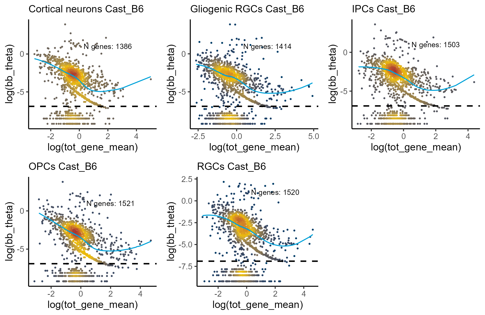
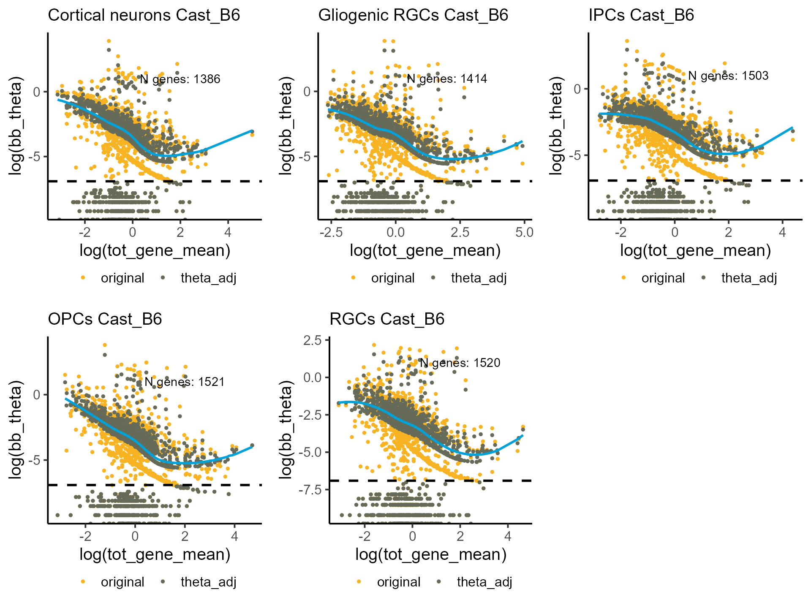
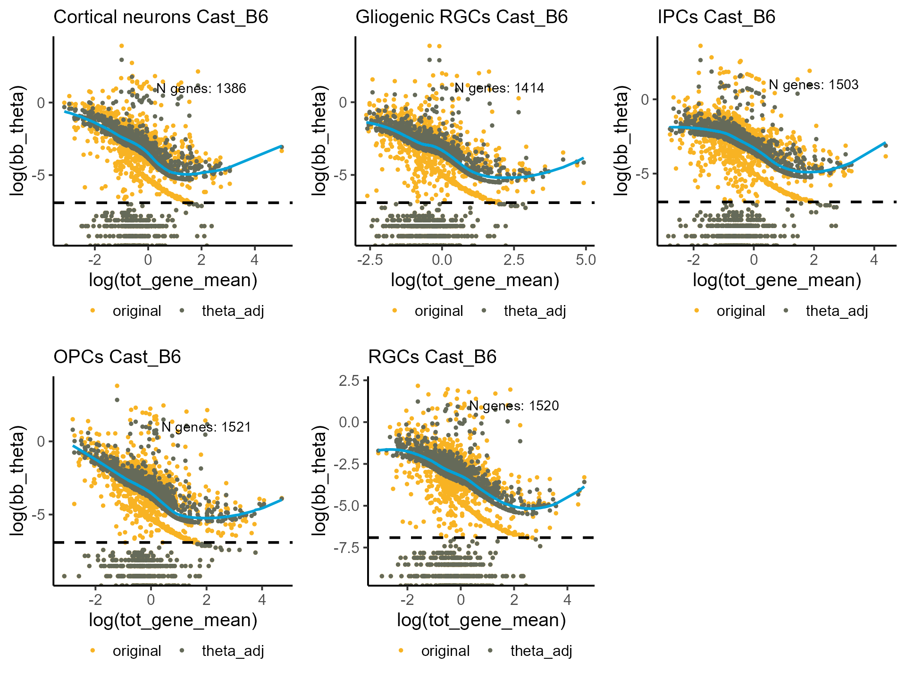
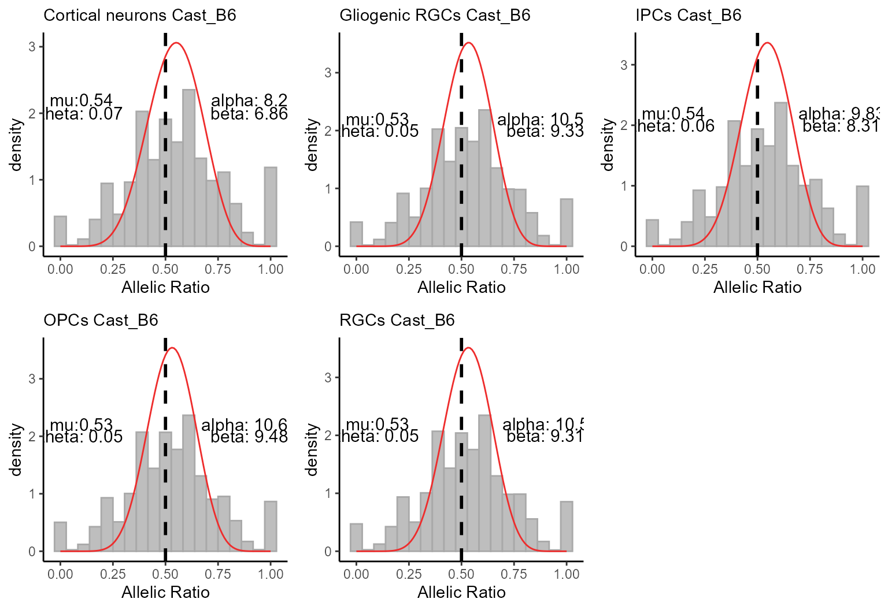
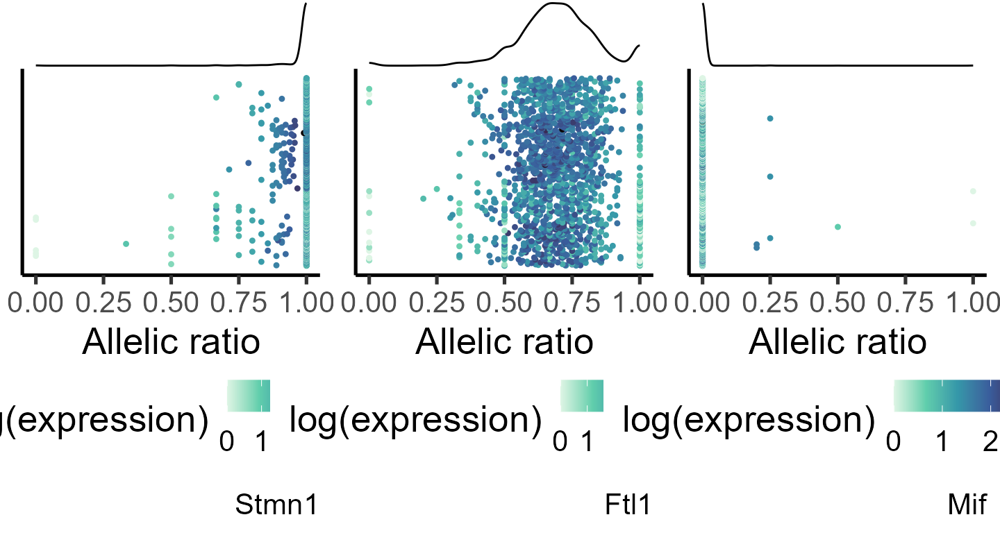

allelic_imbalance
allelic_imbalance.RmdIdentifying genes with allelic imbalance
Introduction
ASPEN is a suite of statistical tests for evaluating allele-specific expression (ASE). It models the allelic ratio — defined as the fraction of reads from the reference allele relative to the total number of reads mapped to a gene — using the beta-binomial distribution. The allelic ratio is restricted to interval and its distribution can be described with beta-binomial mean, , and dispersion, .
As with other sequencing-based measurements, single-cell RNA-seq counts exhibit mean–variance bias: lowly expressed genes tend to display higher relative variability than highly expressed genes. ASPEN mitigates this bias by modelling allelic dispersion, , as a function of gene expression. Useing the hierarchical Bayes approach, it shrinks the original dispersion estimates toward the common trend, which represents the level of dispersion expected for genes with similar expression.
ASPEN requires two input matrices: the reference allele counts and the total counts (a sum of counts from both alleles).
The main steps in the workflow are as follows:Loading allele-specifc count data
In this example, we use mouse brain organoid data from Bl6Cast F1 hybrids (Medina-Cano et al., 2025). We load the reference allele counts (Bl6 counts) and the total counts (sum of counts from both alleles). Cell identities were previously annotated based on marker gene expression, resulting in five major cell types: neurogenic progenitor cells (adial glial cells, RGCs), intermediate progenitors cells (IPCs), deep layer neurons (cortical neurons), gliogenic progenitor cells (gliogenic RGCs) and olygodendrocyte precursor cells (OPCs).
data("Bl6_Cast_a1")
data("Bl6_Cast_tot")
load_file <- system.file("extdata", "Bl6_Cast_cell_annot.xlsx", package = "ASPEN")
cell_annot <- read.xlsx(load_file, rowNames = T)
#adding barcode id
cell_annot$cell_id <- paste(cell_annot$clone, cell_annot$cell_barcode, sep = "_")
print_md(as_huxtable(head(cell_annot)))
#> -----------------------------------------------------------------------
#> cell_barcode background cell_type cell_idents clone cell_id
#> ------------- ---------- ------------ ------------ ------ -------------
#> AAACCCACAGCA cast_b6 Gliogenic Gliogenic clone3 clone3_AAACC
#> GATG progenitor RGCs CACAGCAGATG
#> cells
#>
#> AAACCCATCAGA cast_b6 Gliogenic Gliogenic clone3 clone3_AAACC
#> GCGA progenitor RGCs CATCAGAGCGA
#> cells
#>
#> AAACGAAGTAGT cast_b6 Neurogenic RGCs clone3 clone3_AAACG
#> TAGA progenitor AAGTAGTTAGA
#> cells
#>
#> AAACGAAGTGTT cast_b6 Intermediate IPCs clone3 clone3_AAACG
#> ATCG neuronal AAGTGTTATCG
#> progenitors
#>
#> AAACGAATCTCG cast_b6 Deep layer Cortical clone3 clone3_AAACG
#> TCAC neurons neurons AATCTCGTCAC
#>
#> AAAGGATGTATG cast_b6 Intermediate IPCs clone3 clone3_AAAGG
#> CTTG neuronal ATGTATGCTTG
#> progenitors
#> -----------------------------------------------------------------------The cell abundance for each neuronal subtype
print_md(as_huxtable(table(cell_annot$cell_idents)))
#> -----------------------------
#> V1
#> ----------------- -----------
#> Cortical neurons 1615
#>
#> Gliogenic RGCs 1157
#>
#> IPCs 1274
#>
#> OPCs 1523
#>
#> RGCs 935
#> -----------------------------Counts normalisation
We first normalize the raw single-cell counts using the
[computeSumFactors()] function from scran
package (Lun, et al. 2016). We then create a
SingleCellExperiment object using the total and reference
allele count matrices.
#keeping annotated cells in the count matrices
Cast_B6_a1 <- Cast_B6_a1[,gsub(".*_", "", colnames(Cast_B6_a1)) %in% cell_annot$cell_barcode]
Cast_B6_tot <- Cast_B6_tot[,gsub(".*_", "", colnames(Cast_B6_tot)) %in% cell_annot$cell_barcode]
#creating SingleCellExperiment object
ase_sce <- SingleCellExperiment(assays = list(a1 = as.matrix(Cast_B6_a1),
tot = as.matrix(Cast_B6_tot)))Lowly expressed genes (expressed in less than 10 cells) are removed.
#removing lowly expressed genes
ase_sce <- ase_sce[rowSums(assays(ase_sce)[['tot']] > 1) >= 10, ]
print_md(as_huxtable(dim(ase_sce)))
#> ----------------------
#> V1
#>
#> 1551
#>
#> 6312
#> ----------------------
#adding sample id to the metadata
colData(ase_sce)$replicate <- gsub("_.*", "", rownames(colData(ase_sce)))
#calculate size factors
ase_sce <- computeSumFactors(ase_sce,
clusters=colData(ase_sce)$replicate, assay.type = "tot")The reference allele and total counts are normalized in parallel using the same size factor estimates.
#normalizing counts
ase_sce <- logNormCounts(ase_sce,
size.factors = colData(ase_sce)$sizeFactor,
log = NULL, transform = "none", assay.type = "tot", name = "tot_norm")
#normalizing reference counts by the same size factors
ase_sce <- logNormCounts(ase_sce,
size.factors = colData(ase_sce)$sizeFactor,
log = NULL, transform = "none", assay.type = "a1", name = "a1_norm")
#checking that normalised counts assays are added to the SingleCellExperiment object
ase_sce@assays
#> An object of class "SimpleAssays"
#> Slot "data":
#> List of length 4
#> names(4): a1 tot tot_norm a1_normSplitting count matrices by cell type
Allelic imbalance test is run separately for each cell type. First, we split the metadata object by cell types.
#splitting the metadata by cell type
cell_list <- split(cell_annot, f = cell_annot$cell_idents)Since beta-binomial parameters are estimated from raw counts, we first split the raw total and reference allele count matrices by cell type.
#splitting SingleCellExperiemnt object by cell types
ase_sce_byct <- list()
for (i in 1:length(cell_list)){
ase_sce_byct[[i]] <- ase_sce[,colnames(ase_sce) %in% cell_list[[i]]$cell_id]
}
#removing genes with low expression
ase_sce_byct_filt <- lapply(ase_sce_byct, function(q)
q[rowSums(assays(q)[['tot']] > 1) >= 10, ])
#extracting raw total counts
tot_mat <- lapply(ase_sce_byct_filt, function(q) as.matrix(assays(q)[['tot']]))
#extracting raw reference allele counts
a1_mat <- lapply(ase_sce_byct_filt, function(q) as.matrix(assays(q)[['a1']]))
#selecting genes that matched filtering criteria
a1_mat <- mapply(function(p,q) p[rownames(q), ], a1_mat, tot_mat, SIMPLIFY = F)Before proceeding, we check that the reference and total count matrices have the same dimensions. This is for demonstration purposes only. If this condition is not met, ASPEN will issue a warning.
mapply(function(p, q) dim(p) == dim(q), a1_mat, tot_mat, SIMPLIFY = F)
#> [[1]]
#> [1] TRUE TRUE
#>
#> [[2]]
#> [1] TRUE TRUE
#>
#> [[3]]
#> [1] TRUE TRUE
#>
#> [[4]]
#> [1] TRUE TRUE
#>
#> [[5]]
#> [1] TRUE TRUENext, we check that the gene order is identical between the reference and total count matrices. Again, this is for demonstration purposes only. If this condition is not met, ASPEN will issue a warning.
Estimating beta-binomial parameters
We estimate beta-binomial parameters separately for each cell type.
bb_init_params <- mapply(function(p, q) estim_bbparams(p, q, min_cells = 5, cores = 6), a1_mat, tot_mat, SIMPLIFY = F)
print_md(as_huxtable(head(bb_init_params[[1]])))
#> Warning in to_md.huxtable(ht, ...): Couldn't print whole table in max_width = 80 characters.
#> Printing 8/9 columns.
#> ---------------------------------------------------------------------
#> N AR tot_gene tot_gene alpha beta bb_mu bb_theta
#> _mean _varianc
#> e
#> --------- ------ -------- -------- -------- -------- ------ --------
#> 850 0.984 5.94 29.3 175 2.41 0.986 0.0056
#>
#> 1.06e+03 0.999 8.21 45.4 4.41e+03 3.42 0.999 0.0002
#>
#> 37 0.976 1.09 1.78 14.6 0.343 0.977 0.067
#>
#> 25 0.0113 0.953 1.54 0.807 64.2 0.0124 0.0154
#>
#> 1.43e+03 0.695 21.3 322 184 84.5 0.685 0.0037
#>
#> 93 0.0039 1.4 3.57 25.2 6.94e+03 0.0036 0.0001
#> ---------------------------------------------------------------------Defining lowly expressed genes
ASPEN applies shrinkage selectively - genes with very low dispersion are not moderated and their allelic imbalance is evaluated using the unadjusted values. Genes with stable dispersion are determined based on the residuals from the dispersion modeling step. ASPEN calculates the meadian absolute deviation-squared (), which is used as a cut-off.
min_cutoff <- lapply(bb_init_params, calc_mad)
min_cutoff
#> [[1]]
#> [1] 0.002254469
#>
#> [[2]]
#> [1] 0.001084665
#>
#> [[3]]
#> [1] 0.002810162
#>
#> [[4]]
#> [1] 0.00113423
#>
#> [[5]]
#> [1] 0.001276519Estimate appropriate shrinkage parameters
We estimate shrinkage parameters,
and
,
separately for each cell type. Optionally, genes with very low
dispersion can be excluded from the estimation by setting a minimum
cut-off value with thetaFilter parameter
set.seed(1001011)
shrink_pars <- mapply(function(p, q) estim_delta(p, thetaFilter = q),
bb_init_params, min_cutoff, SIMPLIFY = F)
shrink_pars
#> [[1]]
#> N delta
#> 17 18
#>
#> [[2]]
#> N delta
#> 13 15
#>
#> [[3]]
#> N delta
#> 17 17
#>
#> [[4]]
#> N delta
#> 14 17
#>
#> [[5]]
#> N delta
#> 20 19Performing Bayesian shrinkage
We use [correct_theta()] from ASPEN to
obtain posterior dispersion estimates. The minimum dispersion value is
set with thetaFilter parameter. and genes with residuals
below that value are excluded shrinkage.
bb_init_params <- lapply(bb_init_params, function(q) q[!is.na(q$bb_theta),])
shrunk_estims_vardelta <- mapply(function(p, q) correct_theta(p, N_set = q[1], delta_set = q[2], thetaFilter = 0.001),
bb_init_params, shrink_pars, SIMPLIFY = F)
print_md(as_huxtable(head(shrunk_estims_vardelta[[1]])))
#> Warning in to_md.huxtable(ht, ...): Couldn't print whole table in max_width = 80 characters.
#> Printing 8/13 columns.
#> ---------------------------------------------------------------------
#> N AR tot_gene tot_gene alpha beta bb_mu bb_theta
#> _mean _varianc
#> e
#> --------- ------ -------- -------- -------- -------- ------ --------
#> 850 0.984 5.94 29.3 175 2.41 0.986 0.0056
#>
#> 1.06e+03 0.999 8.21 45.4 4.41e+03 3.42 0.999 0.0002
#>
#> 37 0.976 1.09 1.78 14.6 0.343 0.977 0.067
#>
#> 25 0.0113 0.953 1.54 0.807 64.2 0.0124 0.0154
#>
#> 1.43e+03 0.695 21.3 322 184 84.5 0.685 0.0037
#>
#> 93 0.0039 1.4 3.57 25.2 6.94e+03 0.0036 0.0001
#> ---------------------------------------------------------------------Visualizing model fit.
Genes with extremely low dispersion levels form a distinct cluster in
the dispersion–expression plot. We estimate that those genes have
.
To exclude them from the shrinkage procedure, we set
thetaFilter = 0.001 in the [correct_theta()]
function.
celltypes <- list("Cortical neurons", "Gliogenic RGCs", "IPCs", "OPCs", "RGCs")
p_disp <- mapply(function(p,q) plot_disp_fit_theta(p, midpoint = 100) +
labs(subtitle = paste0(q, " Cast_B6")) + geom_hline(yintercept = log(1e-03), linetype = "dashed", linewidth = 1),
shrunk_estims_vardelta, celltypes, SIMPLIFY = F)
do.call(grid.arrange, c(p_disp, ncol = 3))
#> Warning: Removed 48 rows containing non-finite outside the scale range
#> (`stat_pointdensity()`).
#> Warning: Removed 73 rows containing non-finite outside the scale range
#> (`stat_pointdensity()`).
#> Warning: Removed 81 rows containing non-finite outside the scale range
#> (`stat_pointdensity()`).
#> Warning: Removed 1 row containing missing values or values outside the scale range
#> (`geom_line()`).
#> Warning: Removed 60 rows containing non-finite outside the scale range
#> (`stat_pointdensity()`).
#> Warning: Removed 1 row containing missing values or values outside the scale range
#> (`geom_line()`).
#> Warning: Removed 96 rows containing non-finite outside the scale range
#> (`stat_pointdensity()`).
Visualizing original and shrunk ’s.
p_disp <- mapply(function(p,q) plot_disp(p) +
labs(subtitle = paste0(q, " Cast_B6")) +
geom_hline(yintercept = log(1e-03), linetype = "dashed", linewidth = 1),
shrunk_estims_vardelta, celltypes, SIMPLIFY = F)
do.call(grid.arrange, c(p_disp, ncol = 3))
#> Warning: Removed 1 row containing missing values or values outside the scale range
#> (`geom_line()`).
#> Removed 1 row containing missing values or values outside the scale range
#> (`geom_line()`).
Alternatively, we can set and parameters manually.
shrunk_estims <- lapply(bb_init_params, function(q) correct_theta(q, delta_set = 50, N_set = 30, thetaFilter = 0.001))
p_disp <- mapply(function(p,q) plot_disp(p) +
labs(subtitle = paste0(q, " Cast_B6")) +
geom_hline(yintercept = log(1e-03), linetype = "dashed", linewidth = 1),
shrunk_estims, celltypes, SIMPLIFY = F)
do.call(grid.arrange, c(p_disp, ncol = 3))
#> Warning: Removed 1 row containing missing values or values outside the scale range
#> (`geom_line()`).
#> Removed 1 row containing missing values or values outside the scale range
#> (`geom_line()`). ### Estimating global beta-binomial parameters
Evaluating global beta-binomial parameters provides an overall
measure of bias toward the reference allele. This is done by estimating
beta-binomial distribution parameters across all genes, excluding those
located on sex chromosomes and known imprinted genes. For the GRCm38
(mm10) mouse genome, the package includes predefined lists of X- and
Y-linked genes as well as a set of validated imprinted genes. These can
be excluded by passing them to the genes.excl parameter in
the [glob_disp()] function.
load_file <- system.file("extdata", "mm10_genesXY.txt", package = "ASPEN")
genesXY <- read.table(load_file)
load_file <- system.file("extdata", "mm10_imprinted_genes.xlsx", package = "ASPEN")
genesIMPR <- read.xlsx(load_file, colNames = T)
genes2remove <- c(genesXY$V1, genesIMPR$imprinted.genes)
global_estims <- mapply(function(p, q) glob_disp(p, q, genes.excl = genes2remove, min_counts = 5),
a1_mat, tot_mat, SIMPLIFY = F)
global_estims
#> [[1]]
#> mu.1 theta.1 alpha.1 beta.1
#> 0.544500 0.066400 8.203912 6.862176
#>
#> [[2]]
#> mu.1 theta.1 alpha.1 beta.1
#> 0.530700 0.050300 10.553884 9.332994
#>
#> [[3]]
#> mu.1 theta.1 alpha.1 beta.1
#> 0.541900 0.055100 9.827842 8.307707
#>
#> [[4]]
#> mu.1 theta.1 alpha.1 beta.1
#> 0.528700 0.049700 10.639340 9.483841
#>
#> [[5]]
#> mu.1 theta.1 alpha.1 beta.1
#> 0.529800 0.050500 10.496454 9.314595Visualizing global allelic ratio distribution across all genes.
Deviation from the balanced allelic expression () indicates a presence of a skew towards the reference allele. If reference allele bias is detected, the null hypothesis for the allelic imbalance testing should be adjusted accordingly. For analysis of the Bl6Cast hybrids, instead of using , the null hypotheses will be adjusted to for Cortical neurons and IPCs datasets and to for Gliogenic RGCs, OPCs and RGCs.
p_glob <- mapply(function(p,q,r,s) plot_glob_params(p, q, r, min_counts = 5) +
labs(subtitle = paste0(s, " Cast_B6")),
a1_mat, tot_mat, global_estims, celltypes, SIMPLIFY = F)
#> Warning: The melt generic in data.table has been passed a data.frame and will
#> attempt to redirect to the relevant reshape2 method; please note that reshape2
#> is superseded and is no longer actively developed, and this redirection is now
#> deprecated. To continue using melt methods from reshape2 while both libraries
#> are attached, e.g. melt.list, you can prepend the namespace, i.e.
#> reshape2::melt(plot_data). In the next version, this warning will become an
#> error.
#> Warning: The melt generic in data.table has been passed a data.frame and will
#> attempt to redirect to the relevant reshape2 method; please note that reshape2
#> is superseded and is no longer actively developed, and this redirection is now
#> deprecated. To continue using melt methods from reshape2 while both libraries
#> are attached, e.g. melt.list, you can prepend the namespace, i.e.
#> reshape2::melt(plot_data). In the next version, this warning will become an
#> error.
#> Warning: The melt generic in data.table has been passed a data.frame and will
#> attempt to redirect to the relevant reshape2 method; please note that reshape2
#> is superseded and is no longer actively developed, and this redirection is now
#> deprecated. To continue using melt methods from reshape2 while both libraries
#> are attached, e.g. melt.list, you can prepend the namespace, i.e.
#> reshape2::melt(plot_data). In the next version, this warning will become an
#> error.
#> Warning: The melt generic in data.table has been passed a data.frame and will
#> attempt to redirect to the relevant reshape2 method; please note that reshape2
#> is superseded and is no longer actively developed, and this redirection is now
#> deprecated. To continue using melt methods from reshape2 while both libraries
#> are attached, e.g. melt.list, you can prepend the namespace, i.e.
#> reshape2::melt(plot_data). In the next version, this warning will become an
#> error.
#> Warning: The melt generic in data.table has been passed a data.frame and will
#> attempt to redirect to the relevant reshape2 method; please note that reshape2
#> is superseded and is no longer actively developed, and this redirection is now
#> deprecated. To continue using melt methods from reshape2 while both libraries
#> are attached, e.g. melt.list, you can prepend the namespace, i.e.
#> reshape2::melt(plot_data). In the next version, this warning will become an
#> error.
do.call(grid.arrange, c(p_glob, ncol = 3))
Allelic imbalance test
The allelic imbalance test is performed on the normalized counts.
#extracting normalised reference allele and total counts
tot_norm <- lapply(ase_sce_byct_filt, function(q) as.matrix(assays(q)[['tot_norm']]))
#extracting raw reference allele counts
a1_norm <- lapply(ase_sce_byct_filt, function(q) as.matrix(assays(q)[['a1_norm']]))
#ensure that the genes order is the same
a1_norm <- mapply(function(p,q) p[rownames(q), ], a1_norm, tot_norm, SIMPLIFY = F)We run [bb_mean()] to identify genes with allelic ratio
deviating from the null hypothesis. By default, ASPEN requires each gene
to be expressed in at least 5 cells with a minimum of 5 counts per cell.
These thresholds can be adjusted with min_cells and
min_counts parameters.
bb_mean_res <- mapply(function(p, q, r, s) bb_mean(p, q, r,
min_cells = 5, min_counts = 5,
glob_params = s),
a1_norm, tot_norm, shrunk_estims, global_estims, SIMPLIFY = F)beta_binom_test()] function is a table that
combines the output of the [estim_bbparams()] and
[correct_theta()] functions and adds the following
columns:\
\
If a gene does not meet the quality filter (here, a minimum of 5
cells with at least 5 mapped reads), the allelic imbalance test is not
performed for that gene. These genes will have NA in the
above fields. We remove such genes before calculating the false
discovery rate (FDR).
bb_mean_res <- lapply(bb_mean_res, function(q) q <- q[!is.na(q$pval_mean),])
#calculating fdr
bb_mean_res <- lapply(bb_mean_res, function(q) {q$fdr_mean <- p.adjust(q$pval_mean,
method = "fdr"); q <- q[order(q$fdr_mean),];
return(q)})Top 10 genes with significant allelic imbalance after FDR-adjustment
lapply(bb_mean_res, function(q) q[1:10, c("AR", "fdr_mean")])
#> [[1]]
#> AR fdr_mean
#> Stmn1 0.984126550 0
#> Uchl1 0.998927886 0
#> Hmgb1 0.976436130 0
#> Gm9794 0.011265810 0
#> Ftl1 0.694522296 0
#> Mif 0.003895411 0
#> Rps15 0.838435691 0
#> Rps24 0.203198897 0
#> Sec61g 0.024611841 0
#> Eif4a1 0.998207009 0
#>
#> [[2]]
#> AR fdr_mean
#> Stmn1 0.995669976 0
#> Uchl1 0.999464668 0
#> Gm9794 0.008240608 0
#> Ftl1 0.680002167 0
#> Rps15 0.864274116 0
#> Rps24 0.202660961 0
#> Sec61g 0.032801669 0
#> Hnrnpa1 0.018688305 0
#> Rpl35a 0.999114066 0
#> Ubb 0.998768725 0
#>
#> [[3]]
#> AR fdr_mean
#> Stmn1 0.988800741 0
#> Uchl1 0.999650513 0
#> Gm9794 0.011140701 0
#> Ftl1 0.672111891 0
#> Mif 0.002981515 0
#> Rps15 0.865347111 0
#> Rps24 0.206824332 0
#> Sec61g 0.024171380 0
#> Eif4a1 0.998726346 0
#> Hnrnpa1 0.026185317 0
#>
#> [[4]]
#> AR fdr_mean
#> Stmn1 0.990463015 0
#> Uchl1 0.999502275 0
#> Hmgb1 0.947855448 0
#> Gm9794 0.013659644 0
#> Ftl1 0.666048789 0
#> Mif 0.002498002 0
#> Rps15 0.882687034 0
#> Rps24 0.207635447 0
#> Sec61g 0.029949202 0
#> Eif4a1 0.999096341 0
#>
#> [[5]]
#> AR fdr_mean
#> Stmn1 0.991578964 0
#> Uchl1 0.998702983 0
#> Gm9794 0.004754441 0
#> Ftl1 0.675546570 0
#> Mif 0.004378284 0
#> Rps15 0.867803259 0
#> Rps24 0.195924785 0
#> Sec61g 0.028287041 0
#> Eif4a1 0.998525074 0
#> Rpl35a 0.997623061 0We can visualize the allelic distribution for some of the top-ranked genes. In the plots below, each point represents a single cell, and points are colored by the log(mean expression).
#specifiying genes for plotting
genes_select <- list("Stmn1", "Ftl1", "Mif")
#generating data frame for plotting
plot_data <- lapply(genes_select, function(q) makedf(a1_mat[[1]], tot_mat[[1]], gene = q))
p_ar_dist <- mapply(function(p,q,r) plot_distr(p, gene = q),
plot_data, genes_select, SIMPLIFY = F)
do.call(grid.arrange, c(p_ar_dist, ncol = 3))